1 Introduction
Git is a widely used system (both in academia and industry) for version controlling files and collaborating on code. It is used to track changes in (text) files, thereby establishing a history of all edits made to each file, together with short messages about each change and information about who made it. Git is mainly run from the command line, but there are several tools that have implemented a graphical user interface to run Git commands.
Using version control for tracking your files, and edits to those, is an essential step in making your computational research reproducible. A typical Git workflow consists of:
- Making distinct and related edits to one or several files
- Committing those changes (i.e. telling Git to add those edits to the history, together with a message about what those changes involve)
- Pushing the commit to a remote repository (i.e. syncing your local project directory with one in the cloud)
There are many benefits of using Git in your research project:
- You are automatically forced into a more organized way of working, which is usually a first step towards reproducibility.
- If you have made some changes to a file and realize that those were probably not a good idea after all, it is simple to view exactly what the changes were and revert them.
- If there is more than one person involved in the project, Git makes it easy to collaborate by tracking all edits made by each person. It will also handle any potential conflicting edits.
- Using a cloud-based repository hosting service (the one you push your commits to), like e.g. GitHub or Bitbucket, adds additional features, such as being able to discuss the project, comment on edits, or report issues.
- If at some point your project will be published GitHub or Bitbucket (or similar) are excellent places to publicly distribute your code. Other researchers can then use Git to access the code needed for reproducing your results, in exactly the state it was when used for the publication.
- If needed, you can host private repositories on GitHub and Bitbucket as well. This may be convenient during an ongoing research project, before it is publicly published.
These tutorials will walk you through the basics of using Git as a tool for reproducible research. The things covered in these tutorials are what you will be using most of the time in your day-to-day work with Git, but Git has many more advanced features that might be of use to you.
This tutorial depends on files from the course GitHub repo. Take a look at the setup for instructions on how to set it up if you haven’t done so already.
2 Creating repositories
In order to create a new Git repository, we first need a directory to track. For this tutorial, go ahead and create a directory called git_tutorial, then navigate into it.
The directory should not be within the workshop-reproducible-research directory, since this is itself a Git-tracked directory.
Once we are inside the desired directory, we can initialise Git with the following command:
git initThe directory is now a version-tracked directory. How can you know? Run the command git status, which will probably return something like this:
On branch main
No commits yet
nothing to commit (create/copy files and use "git add" to track)If you try to run git status in a non-Git directory, it will say that it is not a git repository. The way this works is that Git adds a hidden directory .git/ in the root of a Git tracked directory (run ls -a to see it). This hidden directory contains all information and settings Git needs in order to run and version track your files. This also means that your Git-tracked directory is self-contained, i.e. you can simply delete it and everything that has to do with Git in connection to that directory will be gone.
The text nothing to commit (create/copy files and use "git add" to track) tells us that while we are inside a directory that Git is currently tracking, there are currently no files being tracked; let’s add some!
Copy the following files from the workshop-reproducible-research/tutorials/git directory into your git_tutorial directory:
DockerfileSnakefileconfig.ymlenvironment.yml
Once you have done that, run git status again. It will tell you that there are files in the directory that are not version tracked by Git.
For the purpose of this tutorial, the exact contents of the files you just copied are not important. But you will probably recognize many of them, as they are all files used in the MRSA case study described in the introduction to the tutorials. The details of what these files do are described in their respective sessions later in the course, but we provide a brief overview here:
- The
environment.ymlfile contains the Conda environment with all the software used in the analysis (see the Conda tutorial). - The
Snakefileandconfig.ymlare both used to define the Snakemake workflow, that we’ll go through in the Snakemake tutorial. - The
Dockerfilecontains the recipe for making a Docker container for the analysis, which will be covered in detail in the Container tutorial.
We have used two git commands this far:
git inittells Git to track the current directory.git statusis a command you should use a lot. It will tell you, amongst other things, the status of your Git clone in relation to the online remote repository.
3 Adding and committing files
We will now commit the untracked files. A commit is essentially a set of changes to a set of files. Preferably, the changes making out a commit should be related to something, e.g. a specific bug fix or a new feature.
- Our first commit will be to add the copied files to the repository. Run the following (as suggested by
git status):
git add Dockerfile SnakefileRun
git statusagain! See that we have added Dockerfile and Snakefile to our upcoming commit (listed under “Changes to be committed”). This is called the staging area, and the files there are staged to be committed.We might as well commit all files in one go! Use
git addon the remaining files as well:
git add config.yml environment.ymlRun
git statusand see that all files are in the staging area, and that no files are listed as untracked.We are now ready to commit! Run the following:
git commit -m "Add initial files"The -m option adds a commit message. This should be a short description of what the commit contains.
Writing informative and succinct commit messages can be tricky when you’re just starting out. Here are some general guidelines that can help you write good commit messages from the start:
- Separate subject from body with a blank line
- Limit the subject line to 50 characters
- Capitalize the subject line
- Do not end the subject line with a period
- Use the imperative mood in the subject line
- Wrap the body at 72 characters
- Use the body to explain what and why vs. how
In the command above we just added a short subject line (“Add initial files”). It is capitalized, less than 50 characters, does not end with a period, and uses imperative mood (Add!). It is possible to add a descriptive body text as well, as hinted by the points above. This is easiest done in a text editor. If you run git commit without the -m flag, Git will open the default terminal text editor (which can be configured with the core.editor variable) where you can write a longer commit message and body. If you want to read more about the motivation for these points, please see this website.
- Run
git statusagain. It should tell you “nothing to commit, working directory clean”.
What have we done, so far? We had some files in our working directory that we added to the Git staging area, which we subsequently committed to our Git repository. A schematic overview of this process can be seen in the following figure:
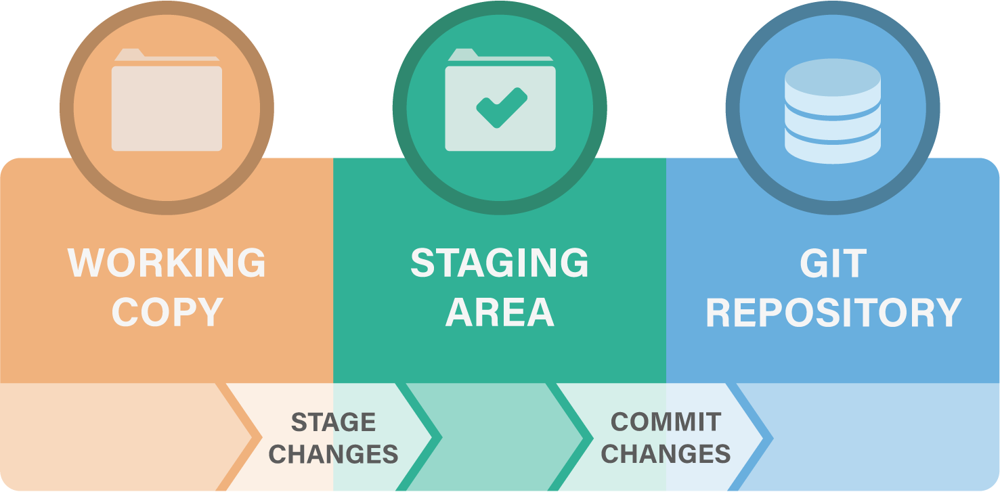
Let’s repeat this process by editing a file!
Open up
environment.ymlin your favourite editor, and change the version of Bowtie2 to a different value, e.g.bowtie2=2.2.4.Run
git status. It will tell you that there are modifications in one file (environment.yml) compared to the previous commit. This is nice! We don’t have to keep track of which files we have edited, Git will do that for us.Run
git diff environment.yml. This will show you the changes made to the file. A-means a deleted line, a+means an added line. There are also shown a few lines before and after the changes, to put them in context.Let’s edit another file! Open
config.ymland change the linegenome_id: NCTC8325togenome_id: ST398. Rungit status. Rungit diff. If we don’t specify a file, it will show all changes made in any file, compared to the previous commit. Do you see your changes?Okay, we made our changes. Let’s commit them! Run:
git add config.yml environment.ymlThis will add both our files to the staging area at the same time. Run git status and see that the changes in both config.yml and environment.yml are ready to be committed.
3.1 Unstaging files
But wait a minute! Shouldn’t each commit optimally be a conceptual unit of change? Here we have one change to the genome ID used for an analysis and one change where another software version is specified: these should probably be separate. We thus want to make two commits, one for each change.
- Let’s remove
environment.ymlfrom the staging area.
git restore --staged environment.ymlPlease note the use of the --staged flag here, which simply removes the specified file(s) from the staging area without changing the file contents. Using the restore command without this flag will not only remove the file from the staging area, but also restore the file to the state it was in the last commit, which is not what we want here.
Run
git statusagain. See that now onlyconfig.ymlis staged for being committed, whereas the changes inenvironment.ymlare tracked by Git, but not ready to be committed.Commit the changes in
config.yml:
git commit -m "Change to ST398 for alignment"- Add and commit the changes in
environment.yml:
git status
git add environment.yml
git status
git commit -m "Change Bowtie2 version"
git statusYou don’t have to run git status between each command, but it can be useful in the beginning while learning what each command does.
As you can see, each commit is a point in history. The more often you commit, and the more specific you keep your commits, the better (more fine-grained) history and version tracking you will have of your files.
3.2 Deleting files
- We can also try to delete a file:
rm Dockerfile- Run
git status. As you can see, Git tells us that the file is deleted, but that the deletion is not committed. In the same way as we commit edits to files, we need to commit a deletion of a file:
git add Dockerfile
git status
git commit -m "Remove Dockerfile"
git statusHere we used rm Dockerfile to delete the file and git add Dockerfile to stage the deletion. You can also use git rm Dockerfile to do both these operations in one step.
3.3 Browsing the history
- To see a history of our changes so far, run:
git logSince Git keeps track of changes in text, e.g. code and text-based documentation, there are some files which you should not commit. Examples of such files are file formats that are not text-based, e.g. Microsoft Word/Excel files or PDFs - although one might sometimes want to track one of these files regardless, such as when you have a static PDF report you received from a sequencing platform that’s never going to change. Other files you shouldn’t track are vary large text files, e.g. those larger than 50 MB.
We added four important Git commands to our repertoire:
git addadds a file to the staging areagit commitcommits the changes we have stagedgit restore --stagedto remove files from the staging areagit rmis shorthand forrm <file>; git add <file>git logshows us the commit history
4 Ignoring files
Git is aware of all files within the repository. However, it is not uncommon to have files that we don’t want Git to track. For instance, our analysis might produce several intermediate files and results. We typically don’t track such files. Rather, we want to track the actual code and other related files (e.g. configuration files) that produce the intermediate and result files, given the raw input data.
- Let’s make some mock result files. These are some of the files that would have been generated by the Snakemake workflow if it was run.
mkdir -p results/multiqc
touch results/multiqc/multiqc_general_stats.txt
touch results/supplementary.html
touch log.tmp- Run
git status. You will see that Git tells you that you have untracked files. However, we don’t want Git to track these files anyway. To tell Git what files to ignore we use a file called.gitignore. Let’s create it:
touch .gitignore- Open the
.gitignorefile in a text editor and add the following lines to it:
# Ignore these directories:
results/
# Ignore temporary files:
*.tmpRun
git statusagain. Now there is no mention of theresultsdirectory or thelog.tmpfile. Notice that we can use wildcards (*) to ignore files with a given pattern, e.g. a specific file extension.Sometimes you want to ignore all files in a directory with one or two exceptions. For example, you don’t want to track all your huge raw data files, but there may be a smaller data file that you do want to track, e.g. metadata or a list of barcodes used in your experiment. Let’s add some mock data:
mkdir data
touch data/huge.fastq.gz
touch data/metadata.txt- Git allows you to ignore all files using the aforementioned wildcard, but then exclude certain files from that ignore command. Open the
.gitignorefile again and add the following:
# Ignore all files in the data/ directory
data/*
# Exclude the metadata file by prefixing it with an exclamation mark
!data/metadata.txt- Finish up by adding the
.gitignoreanddata/metadata.txtfiles to the staging area and committing them:
git add .gitignore
git commit -m "Add .gitignore file"
git add data/metadata.txt
git commit -m "Add metadata file"It is common for certain programming languages or text editors to leave e.g. swap files or hidden data files in the working directory, which you don’t want to track using Git. Instead of manually adding these to every single project you have, you can use the .gitignore_global file, which should be placed in your home directory. It works exactly like a normal gitignore file, but is applied to all Git repositories that you are using on your machine. Some common file extensions that might be put in the global gitignore are .DS_Store if you’re working on a Mac or .swp if you’re coding in (Neo)Vim. To configure git to use the .gitignore_global file you can run git config --global core.excludesfile ~/.gitignore_global.
We now learned how to ignore certain files and directories:
- The
.gitignorefile controls which files and directories Git should ignore, if any. - Specific files can be excluded from ignored directories using the exclamation mark (
!) prefix.
5 Branches
One of the most useful features of Git is called branching. Branching allows you to diverge from the main line of work and edit or update your code and files (e.g. to test out a new analysis or some experimental feature) without affecting your main work. If the work you did in the branch turns out to be useful you can merge that back into your main branch. On the other hand, if the work didn’t turn out as planned, you can simply delete the branch and continue where you left off in your main line of work. Another use case for branching is when you are working in a project with multiple people. Branching can be a way of compartmentalizing your team’s work on different parts of the project and enables merging back into the main branch in a controlled fashion; we will learn more about this in the section about working remotely.
- Let’s start trying out branching! We can see the current branch by running:
git branchThis tells us that there is only the main branch at the moment.
If your branch is called master instead of main that’s perfectly fine as well, but do check out the Git section of the pre-course setup for more details about the choice of default branch names.
- Let’s make a new branch:
git branch test_alignmentRun
git branchagain to see the available branches. Do you note which one is selected as the active branch?Let’s move to our newly created branch using the
switchcommand:
git switch test_alignmentYou can create and switch to a new branch in one line with git switch -c branch_name (or --create).
Let’s add some changes to our new branch! We’ll use this to try out a different set of parameters on the sequence alignment step of the case study project.
- Edit the
Snakefileso that the shell command of thealign_to_genomerule looks like this (add the--very-sensitive-localoption):
bowtie2 --very-sensitive-local -x results/bowtie2/{config[genome_id]} -U {input.fastq} > {output} 2>{log}Add and commit the change!
To get a visual view of your branches and commits you can use the command:
git log --graph --all --onelineIt is often useful to see what differences exist between branches. You can use the diff command for this:
git diff mainThis shows the difference between the active branch (test_alignment) and main on a line-per-line basis. Do you see which lines have changed between test_alignment and main branches?
We can also add the --color-words flag to git diff, which instead displays the difference on a word-per-word basis rather than line-per-line.
Git is constantly evolving, along with some of its commands. The checkout command was previously used for switching between branches, but this functionality now has the dedicated (and clearer) switch command for this. If you’ve previously learned using checkout instead you can keep doing that without any issues, as the checkout command itself hasn’t changed.
Now, let’s assume that we have tested our code and the alignment analysis is run successfully with our new parameters. We thus want to merge our work into the main branch. It is good to start with checking the differences between branches (as we just did) so that we know what we will merge.
- Switch to the branch you want to merge into, i.e.
main:
git switch main- To merge, run the following code:
git merge test_alignmentRun git log --graph --all --oneline again to see how the merge commit brings back the changes made in test_alignment to main.
If working on different features or parts of an analysis on different branches, and at the same time maintaining a working main branch for the stable code, it is convenient to periodically merge the changes made to main into relevant branches (i.e. the opposite to what we did above). That way, you keep your experimental branches up-to-date with the newest changes and make them easier to merge into main when time comes.
- If we do not want to do more work in
test_alignmentwe can delete that branch:
git branch -d test_alignment- Run
git log --graph --all --onelineagain. Note that the commits and the graph history are still there? A branch is simply a pointer to a specific commit, and that pointer has been removed.
There are many types of so-called “branching models”, each with varying degrees of complexity depending on the developer’s needs and the number of collaborators. While there certainly isn’t a single branching model that can be considered to be the “best”, it is very often most useful to keep it simple. An example of a simple and functional model is to have a main branch that is always working (i.e. can successfully run all your code and without known bugs) and develop new code on feature branches (one new feature per branch). Feature branches are short-lived, meaning that they are deleted once they are merged into main.
We have now learned how to divide our work into branches and how to manage them:
git branch <branch>creates a new branch.git switch <branch>moves the repository to the state in which the specified branch is currently in.git merge <branch>merges the specified branch into the current one.
7 Working remotely
So far we’ve only been working on files present on our own computer, i.e. locally. While Git is an amazing tool for reproducibility even if you’re working alone, it really starts to shine in collaborative work. This entails working with remote repositories, i.e. repositories that are stored somewhere online; some of the most common places to store your repositories are GitHub, BitBucket and GitLab. GitHub is the most popular of these, and is what we’ll be using for this tutorial.
An important thing to keep in mind here is the difference between Git (the version control system) and online hosting of Git repositories (such as GitHub): the former is the core of keeping track of your code’s history, while the latter is how to store and share that history with others.
7.1 Create a remote repository
Log in to your GitHub account and press the New button:
- Make sure you are listed as the owner
- Add a repository name, e.g.
git_tutorial - You can keep the repo private or make it public, as you wish
- Skip including a README, a
.gitignoreand licence
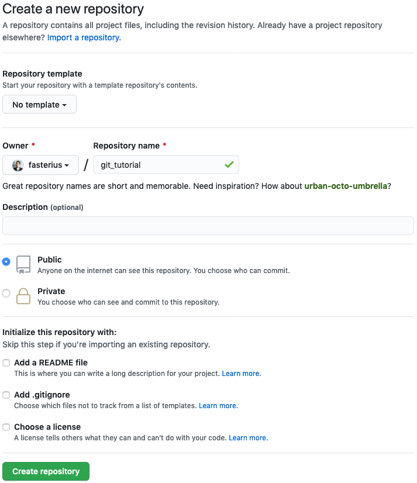
You will now be redirected to the repository page which will list several ways for you to start adding content (files) to the repository. What we will do is to connect the local repository we’ve been working on so far to the remote GitHub server using SSH:
- Add a remote SSH address to your local repository (make sure you change
userto your GitHub username andgit_tutorialto your repository name):
git remote add origin git@github.com:user/git_tutorial.git- Run
git remote -v. This will show you what remote location is connected to your local Git clone. The short name of the default remote is usually “origin” by convention.
Make sure you’ve used an SSH address (i.e. starting with git@github.com rather than an HTTPS address (starting with https://github.com)!
- We have not yet synced the local and remote repositories, though, we’ve simply connected them. Let’s sync them now:
git push origin mainThe push command sends our local history of the main branch to the same branch on the remote (origin). Our Git repository is now stored on GitHub!
- Run
git status. This should tell you that:
On branch main
nothing to commit, working tree cleanYou always need to specify git push origin main by default, but you can circumvent this by telling Git that you always want to push to origin/main when you’re on your local main branch. To do this, use the command git branch --set-upstream-to origin/main. Try it out now.
- Now run
git-statusagain. You should see that now git additionally tells you that your local branch is up to date with the remote branch.
If you go to the repository’s GitHub page you should now be able to see all your files and your code there! It should look something like this:
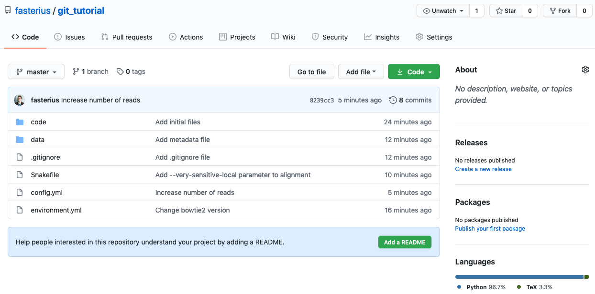
You can see a lot of things there, such as each file and the latest commit that changed them, the repository’s branches and a message from GitHub at the bottom: “Help people interested in this repository understand your project by adding a README.” This refers to GitHub’s built-in functionality of automatically rendering any markdown document named README or README.md in the repository’s root directory and displaying it along with what you can already see. Let’s try it out!
- Let’s create a
README.mdfile and fill it with the following text:
# A Git tutorial
This repository contains tutorial information related to the **NBIS/ELIXIR** course
_Tools for Reproducible Research_, specifically the session on using the `git`
software for version control.
### Links
You can find the latest stable version of the Git tutorial for the course
[here](https://uppsala.instructure.com/courses/87979/pages/git-7-working-remotely?module_item_id=890886).If you haven’t seen this format before you can learn more about it at the markdown page.
- Add, commit and push these changes to GitHub.
git add README.md
git commit -m "Add README.md"
git push origin mainYou should now be able to see the rendered markdown document in your GitHub repository. It is important to add README-files to your repositories so that they are better documented and more easily understood by others and, more likely, your future self. In fact, documentation is an important part of reproducible research! While the tools that you are introduced to by this course are all directly related to making science reproducible, you will also need good documentation. Make it a habit of always adding README-files for your repositories, fully explaining the ideas and rationale behind the project. You can even add README-files to sub-directories as well, giving you the opportunity to go more in-depth where you so desire.
We learned how to connect local Git repositories to remote locations such as GitHub and how to upload commits using git push. We also learned the basics of markdown and how it can be used to document Git repositories.
7.2 Browsing GitHub
GitHub and the rest of the websites that offer remote hosting of git repositories all have numerous features, which can be somewhat difficult to navigate in the beginning. We here go through some of the basics of what you can do with GitHub.
- Go to your GitHub repository in your browser again and click on Code to the left. Click on
config.yml. You will see the contents of the file. Notice that it is the latest version, where we previously changed thegenome_idvariable:
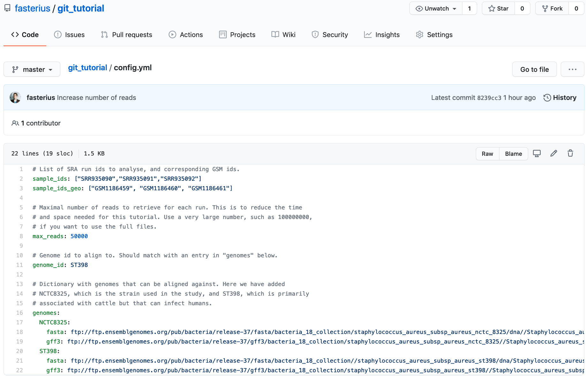
- Click on History. You will see an overview of the commits involving changes made to this file:
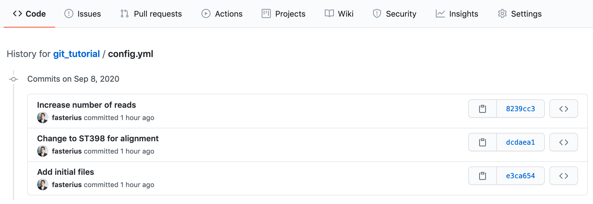
- Click on the
Change to ST398 for alignmentcommit. You will see the changes made toconfig.ymlfile compared to the previous commit.
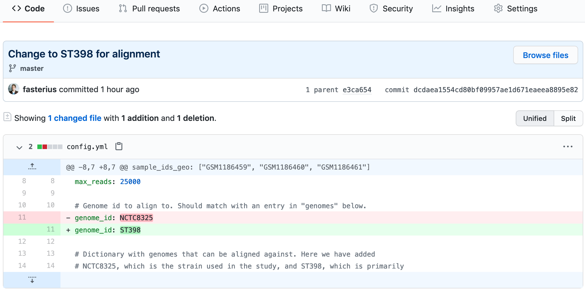
- Go back to the repository’s main page and click on the commit tracker on the right above the list of files, which will give you an overview of all commits made. Clicking on a specific commit lets you see the changes introduced by that commit. Click on the commit that was the initial commit, where we added all the files.
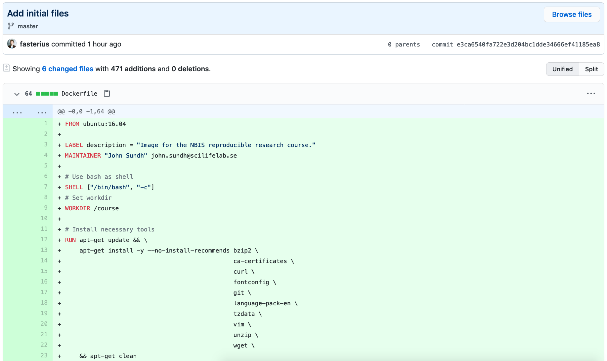
You will now see the files as they were when we first added them. Specifically you can see that the Dockerfile is back, even though we deleted it! Click on the Code tab to the left to return to the overview of the latest repository version.
7.3 Working with remote repositories
While remote repositories are extremely useful as backups and for collaborating with others, that’s not their only use: remotes also help when you are working from different computers, a computer cluster or a cloud service.
- Let’s pretend that you want to work on this repository from a different computer. First, create a different directory (e.g.
git_remote_tutorial) in a separate location that is not already tracked by Git andcdinto it. Now we can download the repository we just uploaded using the following:
git clone git@github.com:user/git_tutorial.git .Again, make sure to replace user with your GitHub user name.
Notice the dot at the end of the command above, which will put the clone into the current directory, instead of creating a new directory with the same name as the remote repository. You will see that all your files are here, identical to the original git_tutorial repository!
Since you already gave the address to Git when you cloned the repository, you don’t have to add it manually as before. Verify this with
git remote -v.Let’s say that we now want to change the
multiqcsoftware to an earlier version: open theenvironment.ymlfile in the second local repo and changemultiqc=1.14tomultiqc=1.7; add and commit the change.We can now use
pushagain to sync our remote repository with the new local changes. Refresh your web page again and see that the changes have taken effect.
Since we have now updated the remote repository with code that came from the second local repository, the first local repository is now outdated. We thus need to update the first local repo with the new changes. This can be done with the pull command.
cdback into the first local repository (e.g.git_tutorial) and run thegit pullcommand. This will download the newest changes from the remote repository and merge them locally automatically.Check that everything is up-to-date with
git status.
Another command is git fetch, which will download remote changes without merging them. This can be useful when you want to see if there are any remote changes that you may want to merge, without actually doing it, such as in a collaborative setting. In fact, git pull in its default mode is just a shorthand for git fetch followed by git merge FETCH_HEAD (where FETCH_HEAD points to the tip of the branch that was just fetched).
That’s quite a few concepts and commands you’ve just learnt! It can be a bit hard to keep track of everything and the connections between local and remote Git repositories and how you work with them, but hopefully the following figure will give you a short visual summary:
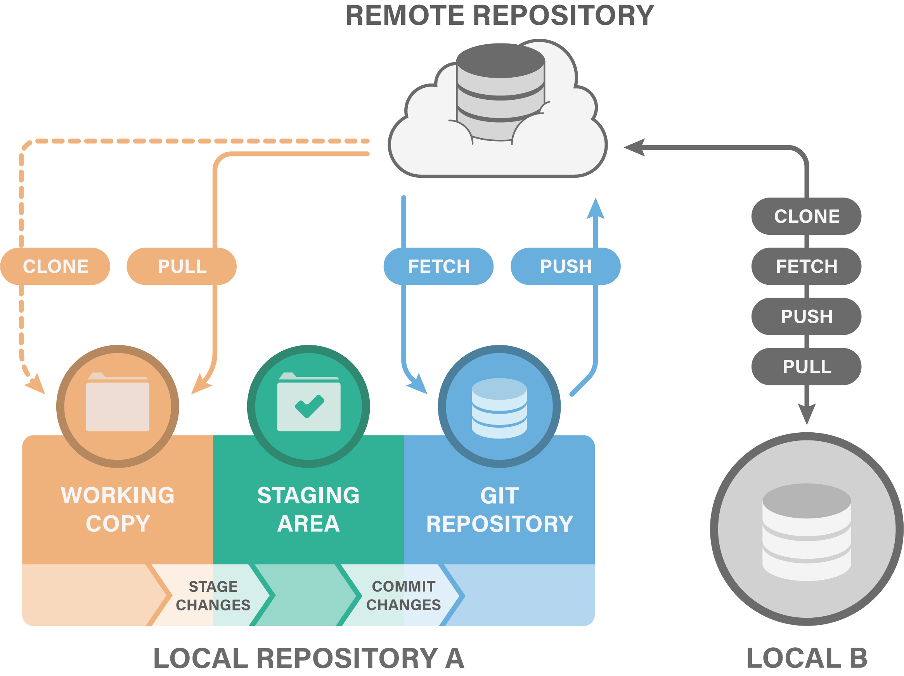
We have learned the difference between local and remote copies of git repositories and how to sync them:
git pushuploads commits to a remote repositorygit pulldownloads commits from a remote repository and merges them to the local branchgit fetchdownloads commits from a remote repository without merging them to the local branchgit clonemakes a local copy of a remote repository
7.4 Remote branches
Remote branches work much in the same way a local branches, but you have to push them separately; you might have noticed that GitHub only listed our repository as having one branch (you can see this by going to the Code tab). This is because we only pushed our main branch to the remote. Let’s create a new local branch and add some changes that we’ll push as a separate branch to our remote - you should do this in the original git_tutorial repository, so make sure you’re in that directory.
- Create a new branch named
trimmingand add the--trim5 5flag to the Bowtie2-command part of theSnakefile, which should now look like this:
bowtie2 --trim5 5 --very-sensitive-local -x results/bowtie2/{config[genome_id]} -U {input.fastq} > {output} 2>{log}Add and commit the change to your local repository.
Instead of doing what we previously did, i.e. merge the
trimmingbranch into themainbranch, we’ll pushtrimmingstraight to our remote:
git push origin trimming- Go the repository at GitHub and see if the new branch has appeared. Just above the file listing click the Branch drop-down and select the new branch to view it. Can you see the difference in the
Snakefiledepending on which branch you choose?
We now have two branches both locally and remotely: main and trimming. We can continue working on our trimming branch until we’re satisfied (all the while pushing to the remote branch with the same name), at which point we want to merge it into main.
Switch to your local
mainbranch and merge it with thetrimmingbranch.Push your
mainbranch to your remote and subsequently delete your localtrimmingbranch.
The above command only deleted the local branch. If you want to remove the branch from the remote repository as well, run:
git push origin --delete trimmingWe learned how to push local branches to a remote with git push origin <branch> and how to delete remote branches with git push origin --delete <branch>.
8 Conflicts
It is not uncommon to run into conflicts when you are trying to merge separate branches, and it’s even more common when you’re working in a collaborative setting with remote repositories. It’ll happen sooner or later, even if you’re only working locally, so it’s important to know how to deal with them! We’ll now introduce a conflict on purpose, which we can then solve.
- Remember that we have two separate local copies of the same repository? Let’s go into the first one,
git_tutorial, and change the MultiQC version in theenvironment.ymlfile:
multiqc=1.8- Add, commit and push your change to the remote.
Now we have a change in our remote and one of our local copies, but not in the other. This could happen if a collaborator of yours committed a change and pushed it to GitHub. Let’s create a conflict!
Move into your other local repository,
git_remote_tutorial, which doesn’t have the new change. Rungit status. Notice that Git says: “Your branch is up-to-date with ‘origin/main’.”. We know that this is not true, but this local clone is not yet aware of the remote changes.Let’s change the
environment.ymlfile in this local repository as well, but to version 1.6, instead! It may be the case that your collaborator thought it was good to use MultiQC version 1.8, whereas you thought it would be better to use MultiQC version 1.6, but neither of you communicated that to the other.Add and commit your change and try to push the commit, which should give you an error message that looks like this:
! [rejected] main -> main (fetch first)
error: failed to push some refs to 'https://github.com/user/git_tutorial.git'
hint: Updates were rejected because the remote contains work that you do
hint: not have locally. This is usually caused by another repository pushing
hint: to the same ref. You may want to first integrate the remote changes
hint: (e.g., 'git pull ...') before pushing again.
hint: See the 'Note about fast-forwards' in 'git push --help' for details.This error message is thankfully quite informative in regards to what is going on and what might be done about it. In essence it will not allow you to push to the remote since there are conflicting changes made to it.
- Let’s download the changes made to the remote, but without trying to merge them directly. This can be done using the following command:
git fetchThe fetch command is very similar to pull in that it downloads remote changes that are not present locally, but differs in that it doesn’t try to merge them locally; pull both downloads and merges (unless there’s a conflict, in which case it will tell you so and raise an error like the one above). You can thus skip fetch and just do pull straight away, if you prefer.
Now run
git status. Unlike before, our local Git clone now is aware of the latest changes pushed to the remote. It will tell you something along the lines: “Your branch and ‘origin/main’ have diverged, and have 1 and 1 different commit each, respectively.”.We can now run the following to see what the difference is between the current state of our local clone and the
mainbranch on the remote origin:
git diff origin/main- Now let’s try to integrate the remote changes with our local changes and get up to sync with the remote:
git mergeUnsurprisingly, the git merge command resulted in a conflict. Git tells us about this and suggests that we should fix the conflicts and commit that.
- As always, run
git statusto get an overview: you will see that you have so-called unmerged paths and that the conflicting file isenvironment.yml, since both modified the same line in this file. To fix a conflict, open the affected file in a text editor. You will see that it now looks something like this:
name: git-env
channels:
- conda-forge
- bioconda
- r
dependencies:
- python=3.10.10
- fastqc=0.11.9
- seqtk=1.3
- snakemake=7.25.0
<<<<<<< HEAD
- multiqc=1.6
=======
- multiqc=1.8
>>>>>>> refs/remotes/origin/main
- bowtie2=2.5.1
- tbb=2021.8.0
- samtools=1.16
- subread=2.0.3
- bedtools=2.30.0
- r-base=4.1.3
- r-ggplot2=3.4.2
- r-reshape2=1.4.4
- r-stringi=1.7.12
- r-pheatmap=1.0.12
- r-r.utils=2.12.2
- bioconductor-rtracklayer=1.54.0
- bioconductor-geoquery=2.62.0
- wget
- graphviz
- xorg-libxrender
- xorg-libxpmThe part between <<<<<<< HEAD and ======= is your local version, and the part between ======= and >>>>>>> refs/remotes/origin/main is the one added to the remote and which caused the conflict when you tried to merge those changes to your local repository. It is now up to you to decide which version to keep, or to change it to a third alternative.
- Let’s say that you are confident that it is better to run MultiQC 1.6 rather than 1.8. Edit the file so that it looks like you want it to, i.e. remove the lines added by Git and delete the line with
multiqc=1.8. The final file should look like this:
name: git-env
channels:
- conda-forge
- bioconda
- r
dependencies:
- python=3.10.10
- fastqc=0.11.9
- seqtk=1.3
- snakemake=7.25.0
- multiqc=1.6
- bowtie2=2.5.1
- tbb=2021.8.0
- samtools=1.16
- subread=2.0.3
- bedtools=2.30.0
- r-base=4.1.3
- r-ggplot2=3.4.2
- r-reshape2=1.4.4
- r-stringi=1.7.12
- r-pheatmap=1.0.12
- r-r.utils=2.12.2
- bioconductor-rtracklayer=1.54.0
- bioconductor-geoquery=2.62.0
- wget
- graphviz
- xorg-libxrender
- xorg-libxpm- Run
git statusagain. Notice that it saysuse "git add <file>..." to mark resolution? Let’s do that!
git add environment.yml- Run
git statusagain! It will now tell us:All conflicts fixed but you are still merging. (use "git commit" to conclude merge). So, you probably guessed it, run:
git commit -m "Merge and set MultiQC to v1.6"- Finally, push these changes to GitHub:
git push- Go to GitHub in the browser and click the commit tracker again. You will see a list of commits including where MultiQC was first changed to version
1.7from our previous work, then to1.8,1.6and, finally, followed by a merge where the version was set to1.6.
While the example we’ve used here is from a collaborative setting, conflicts also arise when you are working alone. They usually happen when you have several feature branches that you want to merge into main and you’ve forgot to keep all branches up-to-date with each other.
We learned about how conflicting commits can happen and how to deal with them by inspecting the affected files and looking for the source of the conflict.
9 Extra material
The following extra material contains some more advanced things you can do with Git and the command line in general, which is not part of the main course materials. All the essential skills of Git are covered by the previous sections; the material here should be considered tips and tricks from people who use Git every day. You thus don’t need to use these things unless you want to, and you can even skip this part of the lesson if you like!
If you are interested in learning more about Git in general, here are some reading tips for you:
9.1 Forking
When you want to work on an Open Source project that is available on e.g. GitHub, you usually don’t have permission to directly push code to the project’s repository - this is so that the project’s maintainers are the only ones that can directly change anything in their codebase. How do you then contribute to projects that don’t allow you to push your code to their repository? Simple: use forking!
Forking is when you make your own copy of a repository on your GitHub account, which you will then have permissions to change as you see fit. You can then create pull requests from your fork to the original repository, rather than pushing code to a new branch and making a pull request from that. Working with forks just adds an additional step to the whole workflow: instead of being “clone; code and commit changes on a new branch; push branch to remote; pull request from branch” it becomes “fork; clone; code and commit changes; push code to fork; pull request from fork”.
You might also want to do a fork of a project simply because you want to have your own copy of it as well, without ever having the intention of changing it. This is, of course, perfectly fine as well, but do keep in mind that developers are usually quite happy to incorporate new changes from contributors if they are reasonable and fulfil a purpose and add functionality to the project. It is quite common that you have a use-case the maintainer didn’t think of before, and that you’ve helped the project grow by contributing your code!
9.2 Amending commits
Once in a while you’ll have just committed something to your Git repo and immediately remembered that you forgot to add something small, or perhaps you saw an error somewhere. While you can certainly just add that and make a new commit, wouldn’t it be nicer if you could just make the change as if it was already a part of the first commit? Well, you can! Just make the change, stage it and the commit together with the --amend flag, like so:
git add <file>
git commit --amendThis will add the staged changes to the previous commit as if they had always been there. Be careful, though! This will actually rewrite history, meaning that it only works if you only amended local changes. If you had already pushed the first commit to a remote repository you would run into trouble: you will be able to make the amend without issue, but you’ll get an error when you try to push your new changes, since the remote already contains the first version of the commit and can’t simply rewrite what it already has.
Amending changes is thus a good way to fix small mistakes you realise you made just after committing them, as long as you only amend local changes!
9.3 Rebasing
The git rebase command is an alternative to git merge in that it solves the same problem: getting changes in one branch into another branch. We’ve already gone through merging extensively, so how is rebasing different? Let’s look at a common case: a feature-branch which we want to get into the main branch.
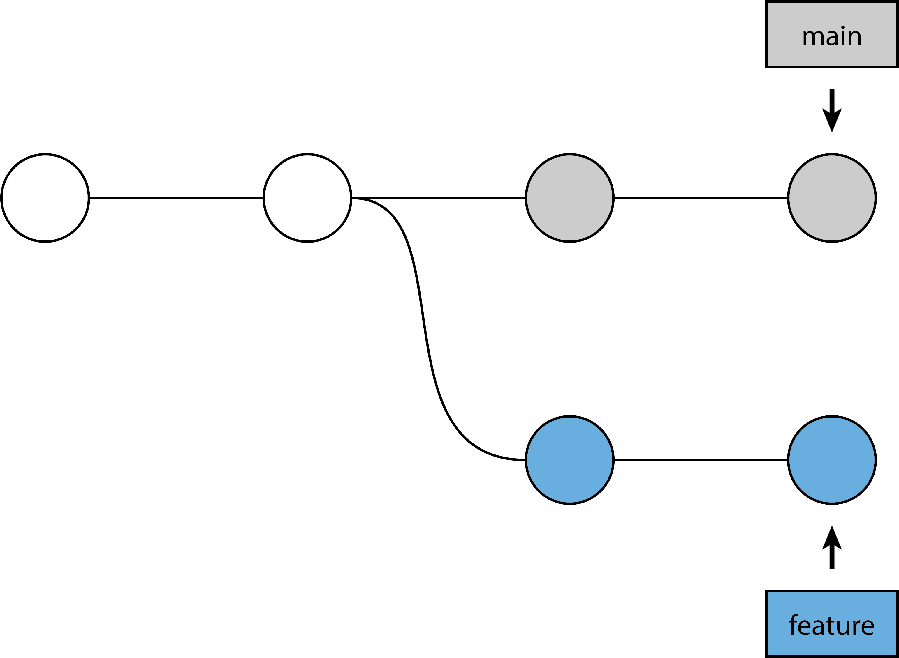
Recall that a merge creates a merge commit, something akin to Merge branch 'feature-branch' into main or similar. This is a new commit that didn’t exist that brings the changes on feature-branch into main, but it contains no actual work itself. This is both a good and a bad thing: good, because merging is a safe, non-destructive operation (it doesn’t alter history); bad, because it can make the history itself look quite messy. These are the commands used and what the history will look like afterwards:
git switch main
git merge feature-branch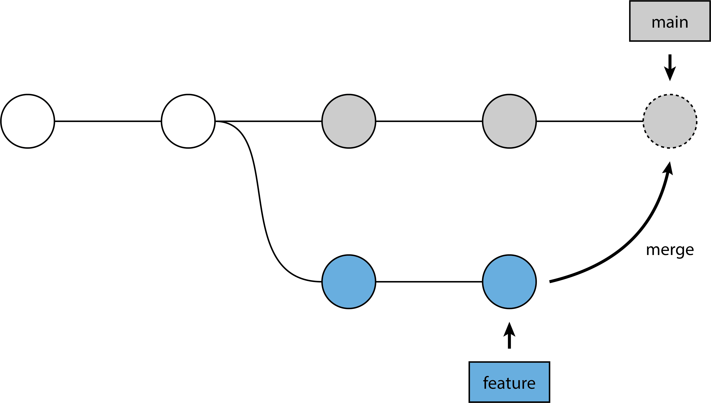
(The commit with the dashed border is the merge commit.)
Rebasing, on the other hand does not create merge commits. Indeed, what rebase does is to “re-base” one branch on the other, i.e. pretend that new changes were done on a different base than what actually happened (hence the name). Getting our feature-branch onto main using rebase actually entails two separate steps: first the rebase itself, followed by a fast-forward merge:
git switch feature-branch
git rebase main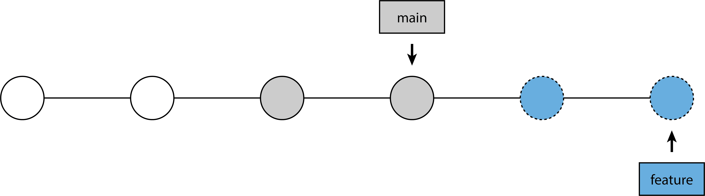
This step rebases our feature-branch on top of main, meaning that we pretend that the commits on feature-branch were done based on the latest commits on main - you can also think of it as moving the entire feature-branch to the tip of the main branch. The commits with the dashed borders here indicate brand new commits; rebasing can’t somehow move the commits to the new base, rather it has to “replay” those commits as if they were done on the new base.
git switch main
git merge feature-branch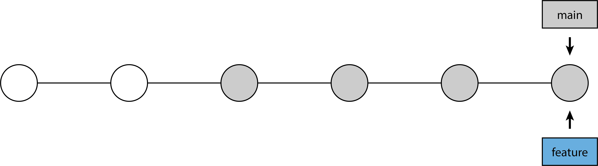
We’ve now got our feature-branch commits onto main with a single, linear history without any merge commits! We did have to rewrite history, though, when we did the rebase itself. As with amending (see above), this is fine if we’re only working locally, but we’ll quickly run into trouble if we try to rebase things that have already been pushed. We can rebase on top of remote things, of course, since we’re not changing any remote history, only the local history. Be careful when you rebase!
9.4 Rebasing as clean-up
If the above section felt scary, don’t worry! There’s another highly useful use-case for git rebase that doesn’t risk destroying any history, namely local clean-up!
Let’s imagine you’ve worked on your local feature-branch for some time, and you have a number of commits on it. Some are highly related to each other and might actually be better suited as a single commit. You’ve also spotted a spelling error in one commit message, and realised that you missed important information in another. We can actually solve all of these issues with an interactive rebase! If you have 4 commits on your branch you can type the following:
git rebase -i HEAD~4The -i flag means interactive, while HEAD~4 means 4 commits back from HEAD. This will open your default text editor and give you a selection looking something like this:
pick 0abf162 First feature commit
pick befc682 A minor change on the first commit
pick c9d1426 A commit with an uncomplete commit message
pick 2e0cb97 A commit with a spelling mitake
# Rebase 879ddcc..0abf162 onto 879ddcc (4 commands)
#
# Commands:
# p, pick <commit> = use commit
# r, reword <commit> = use commit, but edit the commit message
# e, edit <commit> = use commit, but stop for amending
# s, squash <commit> = use commit, but meld into previous commit
(... more instructions ...)The commits are ordered with the most recent one at the bottom. The commented instructions (all of which are not shown here) show you what alternatives you have to work with; all you have to do is to change the pick keyword next to the commit hashes to whatever keyword you need from the list, save and exit.
In order to solve the toy example here we might decide that the four keywords should be pick, squash, reword and reword, from top to bottom. Once that’s done simply save and exit, and another instance of your default text editor will open for you to complete the specified changes. In the case above we’d get two separate new instances where we can change the commit message - these work the same as any normal commit.
Interactive rebasing is thus well-suited for fixing and cleaning of local changes you have yet to push anywhere, even if you don’t use rebasing as an alternative to merging! This can make your Git history both cleaner and more concise, which is great when you’re collaborating with others.
9.5 Resetting
Sometimes you’ll want to simply discard changes you’ve already committed. This should, however, be something that you rarely have to do. Completely moving back to a previous commit is something called a hard reset, which can be accomplished like so:
git reset --hard 5b83463You specify the commit you wish to return to, discarding all other changes, including any changes done to the working directory. It goes without saying that this command is among the most dangerous commands available in Git and should be used with caution.
9.6 The reflog
We have shown many ways to work with Git and its various commands, and it occasionally happens that errors are introduced - especially when you’re not careful with using git commit --amend, git rebase or git reset on remote changes. This is where the reflog comes in. Think of the reflog as Git’s “safety net”: it stores almost every change you make to a Git repository (regardless of whether you commit the change) in a chronological manner. The following is an example of what the output of the git reflog command might show:
58deba6 HEAD@{0}: merge: feature-branch: Fast-forward
8c80c88 HEAD@{1}: checkout: moving from feature-branch to main
555544a HEAD@{2}: commit: feature development 2
4c92630 HEAD@{3}: commit: feature development 1
8c80c88 HEAD@{4}: checkout: moving from main to feature-branchIt shows the most recent change at the top, notified by HEAD@{0}. We thus have a merging of feature-branch into main, a checkout (switch) into main, two commits on feature-branch and a checkout into feature-branch - reading it backwards we get a chronological log of what has happened.
The reflog is incredibly useful for when you’ve lost something you later realise you want to access again, such as when you’ve just used git reset. The reflog might look like this, for example:
bc3641f HEAD@{0}: reset: moving to HEAD~2
caf9321 HEAD@{1}: commit: More work on the feature
1bc36af HEAD@{2}: commit: Work on a new featureWe see two commits related to some new feature and a reset to HEAD~2 (two commits back from HEAD). If we realise that we actually liked the work we just threw away we can move around in the reflog in a similar manner we do normal commits:
git reset HEAD@{1}This will put us back to the state we were in before we used git reset. We here refer to the reflog using the HEAD@{N} notation, which differs from the usual HEAD~N notation so that it is clear if it is the commit history or the reflog that is intended. While the reflog is hopefully not something you’ll have to use often it’s quite useful to know it exists, if only to be able to search the internet for more details regarding a problem you’ve encountered!
9.7 Decorating your prompt
When you are working on the command line interface (CLI), you will usually have some small pieces of information relating to your current directory, the name of the computer or host you’re working on, and so forth. You’ve probably already seen your prompt while working with Git throughout this lesson, but here’s an example of what one might look like:
erikfmbp:~/teaching/workshop-reproducible-research erik.fasterius $The above prompt contains the name of the computer, a colon, the current working directory, the username and a dollar-sign; it is stored in the variable PS1. You can type echo $PS1 to see what variables your prompt is made up of; the above example contains \h:\W \u\$, where \h is the hostname, \W the working directory and \u the username.
If you’re using zsh instead of bash you’ll have to replace the backslashes (\) in the commands with percent signs (%).
Some people like to also show the current branch on their prompt, thus avoiding having to type git branch continuously. There are several ways you might do this, and we’re only presenting one of them here: a bash function.
git_branch() {
git branch 2> /dev/null | sed -e '/^[^*]/d' -e 's/* \(.*\)/ (\1)/'
}This function does a number of things:
- Ejects the error message from Git if the current directory isn’t a part of a Git repository into
/dev/null(i.e. into nothing). - Find the current branch by searching for a line that starts with
*(i.e. the current branch) using the command line programsed. - Put the current branch into parentheses with a space before it.
We can then build our new prompt by adding this function into it:
# The first part of the old prompt
PS1='\h:\W \u'
# Add the Git branch
PS1=$PS1'$(git_branch)'
# Add the last part of the old prompt
PS1=$PS1' \$'Now you should see the current Git branch on your prompt! The only problem now is that this only works for your current session: once you restart your CLI you’ll have to re-define your prompt again. This can be circumvented, though. What you need to do is to add the code defining your prompt into your so-called bash profile: ~/.bash_profile. Every time you load a new CLI session this file is read and any code inside it is executed. You might already have this file, so make sure you don’t overwrite it!
9.8 Bash aliases for git
Some Git commands are used over and over again when working with git, such as git status. Some people like to have aliases (i.e. shortcuts) for these common commands. Here is a small list of such aliases that you may find useful or, even better, might inspire you to create your own! Add them to your ~/.bash_profile as above, so that they’re available across sessions.
# Basic Git commands
alias ga='git add'
alias gb='git branch'
alias gc='git commit'
alias gd='git diff'
alias gl='git log'
alias gm='git merge'
alias gp='git push'
alias gt='git tag'
alias gu='git pull'
alias gw='git switch'
# Git status in short format
alias gs='git status --short'
# Show diff of staged files
alias gds='git diff --staged'
# Add and commit all tracked and modified files
alias gca='git commit --all'
# Create and switch to a new branch
alias gwc='git switch --create'
# Git log with one line per commit
alias glo='git log --oneline'9.9 Pretty logs
If you want to customise e.g. the format and the colours of the logs you can use the gitconfig file (the same one we added things to using git config --global user.name "Mona Lisa" in the pre-course setup). You can read more about exactly what you can do at the documentation for Git configs and pretty formats, but we’ll provide two examples here:
[format]
pretty = format:%C(yellow)commit %H %C(auto)%d %nAuthor: %C(cyan)%aN %C(italic reset)(%ae) %nDate: %C(blue)%ar %C(italic reset)(%ai) %n%n%C(bold reset)%w(0,6,6)%s%n%C(reset)%+bThis first example alters the format of the default git log command. It looks similar to what you’d be used to seeing with that command, except his has some colour highlights and adds the relative date (e.g. “1 hour ago” and similar relative times).
[pretty]
line = format:%C(yellow)%h %C(blue)%>(12)%ar %C(cyan)%aN%C(auto)%d %C(reset)%sThis second example is a custom format that can be called using git log --pretty=<format-name>, and is similar to the built-in --oneline flag, but also containing nicer colours, the relative date as well as the author name ;the format name line here is used for its similarity to oneline. You can add any number of custom formats you like using such config specifications. If you’re using aliases as in the section above you might change the glo alias to be git log --pretty=line instead, which will give you the nicer log on one line.